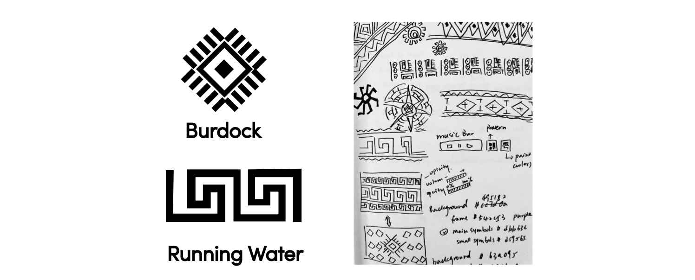

A fabric installation of the music visualization.
2017 | Arduino + Processing
The idea came to me when I was at the National Museum of Anthropology in Mexico City. I was so intrigued by the colorful Mayan textile patterned costumes. Archeologists have found similarities in ancient Mayan and Chinese cultures that they believe to be due to early contact between the two civilizations. I wanted to combine certain elements from both cultures to see what kind of sparks I could create.

This fabric installation used “running water” and “burdock” from the Mayan texture symbols to design graphical patterns using processing.
Huoyuanjia is a Chinese song about the legendary Kung Fu grandmaster Huo Yuanjia. The song contains both rhythmic Chinese drumbeat and female role voice in Peking Opera.